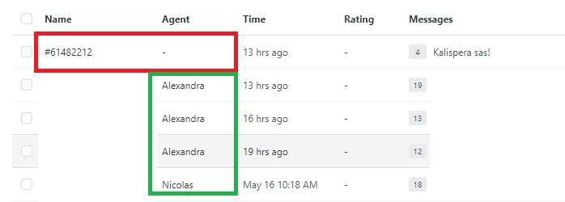
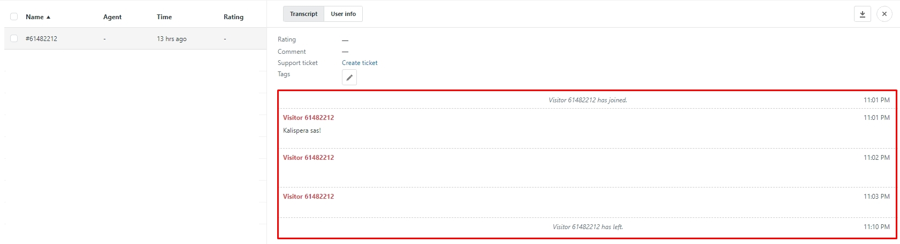

If one of the chats was missed during night shift or during the regular shift, we have to send a follow up email to the customer.
To reply to a missed chat:
1. Locate a missed chat in Zendesk - History section.
2. Check that customer hasn't contacted us afterwards and received a response.
3. Open and review customer's missed chat
4. Switch to "user Info" section
5. Check if customer has entered his email upon starting a chat.
6. if no email has been entered, we are unable to contact the customer.